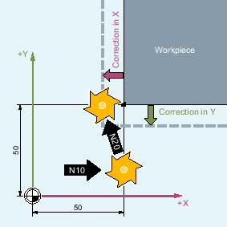
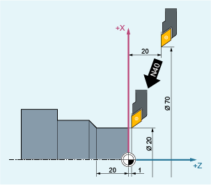
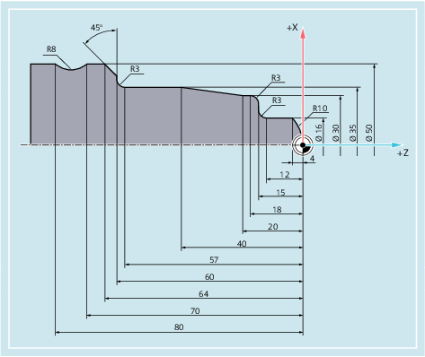

When tool radius compensation (TRC) is active, the control automatically calculates the equidistant tool paths to the programmed workpiece contour for various tools.

R | Tool radius |
S | Cutting edge center point |
Commands of G Group 7 are used to activate and deactivate tool radius compensation.
Syntax
| G0/G1 X... Y… Z... G41/G42 [OFFN=<value>] | |
| ... | |
| G40 X... Y… Z... |
Meaning
| Activate TRC with machining direction left of the contour. |
| Activate TRC with machining direction right of the contour. |
| Allowance on the programmed contour (normal contour offset) (optional), e.g. to generate equidistant paths for rough finishing. |
| Deactivate TRC. |
| Note |
In the NC block with G40/G41/G42, G0 or G1 must be active and at least one axis on the selected machining plane has to be specified. If only one axis is specified on activation, the last position on the second axis is added automatically and traversed with both axes. The two axes must be active as geometry axes in the channel. This can be ensured by programming GEOAX. If no geometry axis is programmed for the current plane in the block with the tool radius compensation selection, then no selection is made. If a geometry axis is programmed in the block with the tool radius compensation deselection, then compensation is deselected even if it is not on the current plane. |
Examples
Example 1: Milling
| Program code | Comment |
|---|---|
| N10 G0 X50 T1 D1 | ; Only tool length compensation is activated. X50 is approached without compensation. |
| N20 G1 G41 Y50 F200 | ; Radius compensation is activated, point X50/Y50 is approached with compensation. |
| N30 Y100 | |
| … |
Example 2: "Conventional" procedure using milling as an example
"Conventional" procedure:
Tool call.
Change tool.
Activate machining plane and tool radius compensation.
| Program code | Comment |
|---|---|
| N10 G0 Z100 | ; Retraction for tool change. |
| N20 G17 T1 M6 | ; Tool change |
| N30 G0 X0 Y0 Z1 M3 S300 D1 | ; Call tool offset values, select length compensation. |
| N40 Z-7 F500 | ; Feed in tool. |
| N50 G41 X20 Y20 | ; Activate tool radius compensation, tool machines to the left of the contour. |
| N60 Y40 | ; Mill contour. |
| N70 X40 Y70 | |
| N80 X80 Y50 | |
| N90 Y20 | |
| N100 X20 | |
| N110 G40 G0 Z100 M30 | ; Retract tool, end of program. |
Example 3: Turning
| Program code | Comment |
|---|---|
| … | |
| N20 T1 D1 | ; Only tool length compensation is activated. |
| N30 G0 X70 Z20 | ; X70 Z20 is approached without compensation. |
| N40 G42 X20 Z1 | ; Radius compensation is activated, point X20/Z1 is approached with compensation. |
| N50 G1 Z-20 F0.2 | |
| … |
Example 4: Turning
| Program code | Comment |
|---|---|
| N5 G0 G53 X280 Z380 D0 | ; Starting point. |
| N10 TRANS X0 Z250 | ; Work offset. |
| N15 LIMS=4000 | ; Speed limitation (G96). |
| N20 G96 S250 M3 | ; Select constant feedrate |
| N25 G90 T1 D1 M8 | ; Select tool selection and offset. |
| N30 G0 G42 X-1.5 Z1 | ; Set tool with tool radius compensation. |
| N35 G1 X0 Z0 F0.25 | |
| N40 G3 X16 Z-4 I0 K-10 | ; Turn radius 10. |
| N45 G1 Z-12 | |
| N50 G2 X22 Z-15 CR=3 | ; Turn radius 3. |
| N55 G1 X24 | |
| N60 G3 X30 Z-18 I0 K-3 | ; Turn radius 3. |
| N65 G1 Z-20 | |
| N70 X35 Z-40 | |
| N75 Z-57 | |
| N80 G2 X41 Z-60 CR=3 | ; Turn radius 3. |
| N85 G1 X46 | |
| N90 X52 Z-63 | |
| N95 G0 G40 G97 X100 Z50 M9 | ; Deselect tool radius compensation and approach tool change location. |
| N100 T2 D2 | ; Call tool and select offset. |
| N105 G96 S210 M3 | ; Select constant cutting rate. |
| N110 G0 G42 X50 Z-60 M8 | ; Set tool with tool radius compensation. |
| N115 G1 Z-70 F0.12 | ; Turn diameter 50. |
| N120 G2 X50 Z-80 I6.245 K-5 | ; Turn radius 8. |
| N125 G0 G40 X100 Z50 M9 | ; Retract tool and deselect tool radius compensation. |
| N130 G0 G53 X280 Z380 D0 M5 | ; Approach tool change location. |
| N135 M30 | ; End of program. |